This page was originally designed for just a gift
But by the time finishing the page, it turned into memories.
How can I forget the pretty face staring us for sitting wrong seat. Didn't know that pretty face will hunt me for the rest
You didn't tie your hair that day Put smiles as well on your pretty face Those joys and smiles also made my day.
I had a chance to know you name. Beautiful name! The pretty name that I still use to test my ink.
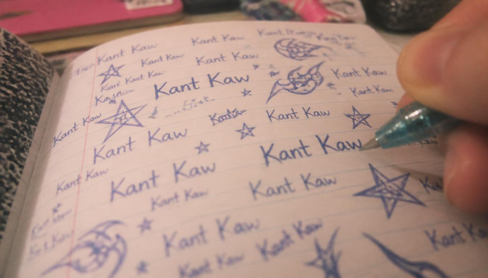
So today during English class when we were playing a game, I used your team's answer, and you snapped at me saying, 'Watch out or you're gonna get beat up!' Well, if you're the one doing it, I'll gladly take it with a big smile.
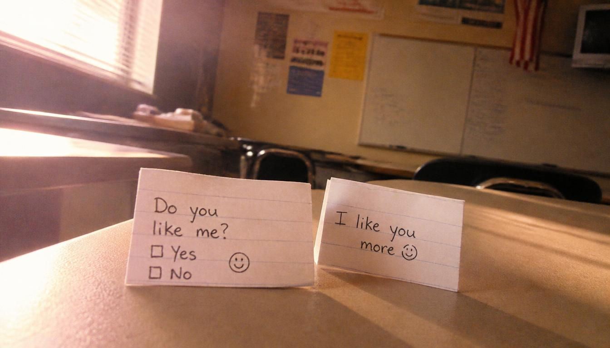
We weren't in the same classroom for our very first exam. I specifically waited around for you that day because I really wanted to talk. Walking back together by your side after each test was pure bliss. It seemed like I was talking about the exam, but truth is, I just wanted to hear your voice. Initiating a conversation in front of everybody wasn't as easy as it seemed.
You showed up at the tuition room an hour early today. Just sitting alone in the room, focused on studying... I think we shared a brief smile for a moment. The way you study is honestly so adorable. And truth be told, you’ve really changed me so much.
Truth be told, my heart was racing with anxiety tonight, fearing you'd take things the wrong way. Now that everything went smoothly, I can't sleep from pure happiness. Starting right now, every part of my being belongs to you, my love...
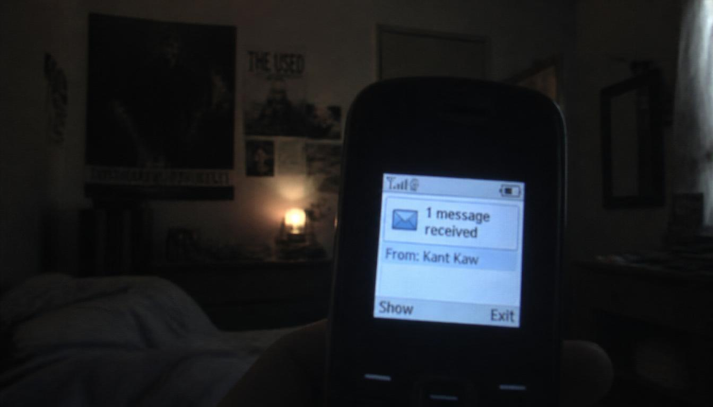
I suppose I'm never satisfied. Before I knew you, I longed to be close to you. Once I got the chance, I found myself wanting to whisper sweet nothings. Whatever the topic may be, talking with you brings me genuine joy. Fate has really been on my side, 'Big Stone'... The name you give me.
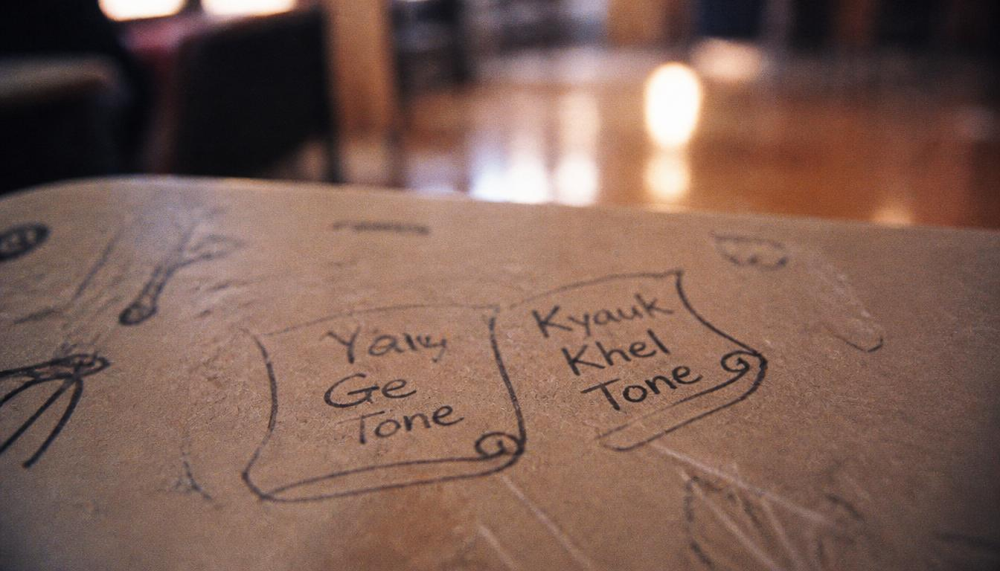
I think I’d describe it just like the day our eyes first met. That shy, subtle smile you gave me back was everything. I have zero regrets about being so crazy for your cute face—to the point where I can't go a day without seeing it.
Honestly, this morning was a true blessing in disguise. The teacher was strictly picking people through a voting system, and I felt completely helpless. Little did I know, a beautiful girl was secretly saving me from behind—and I only realized it when you smiled at me.
Once again today, I had the sweetness of seeing you as joyful as a child. That was our very first time heading to the auditorium together. Inside, you were sitting two rows ahead of me, happily munching on snacks. From the back row, I just took in every bit of your joy before heading back.
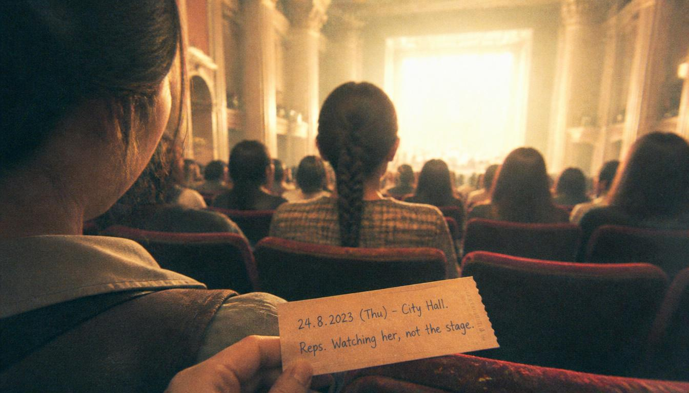
On the award ceremony rehearsal day, there we were in the auditorium once again. A sweet girl singing along to the music, looking so carefree and genuinely happy. Your joy is so powerful, do you know that? On the award ceremony rehearsal day, there we were in the auditorium once again. A sweet girl singing along to the music, looking so carefree and genuinely happy. Your joy is so powerful, do you know that? If I get the chance to see you again, this is the sight of you I'd love to witness once more.
Today was the school award ceremony. The sweetest smile, the brightest spark in your eyes... I never dared to hope I'd get to experience those from you. To top it all off, you said, 'Don't forget to eat your lunch, alright?' I swear, no one in the world could have been happier than I was today.
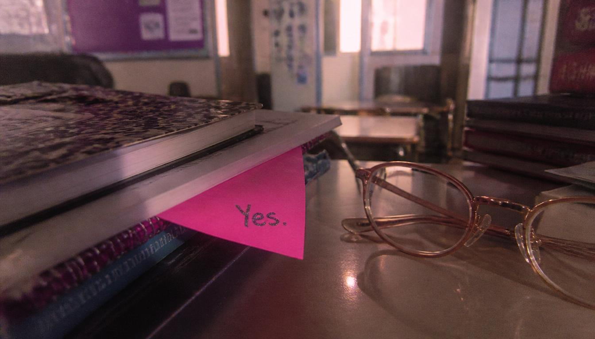
Shortly after I submitted my name, hearing that you put yours down as well made my heart soar with confidence. When you gave me that quiet, sweet smile again, it felt like walking on air. I can still recall everyone's astonished faces when we signed up together. Thank you from the bottom of my heart for standing by my side unconditionally. And thank you once more for allowing me to craft such a sweet memory together, my beloved.
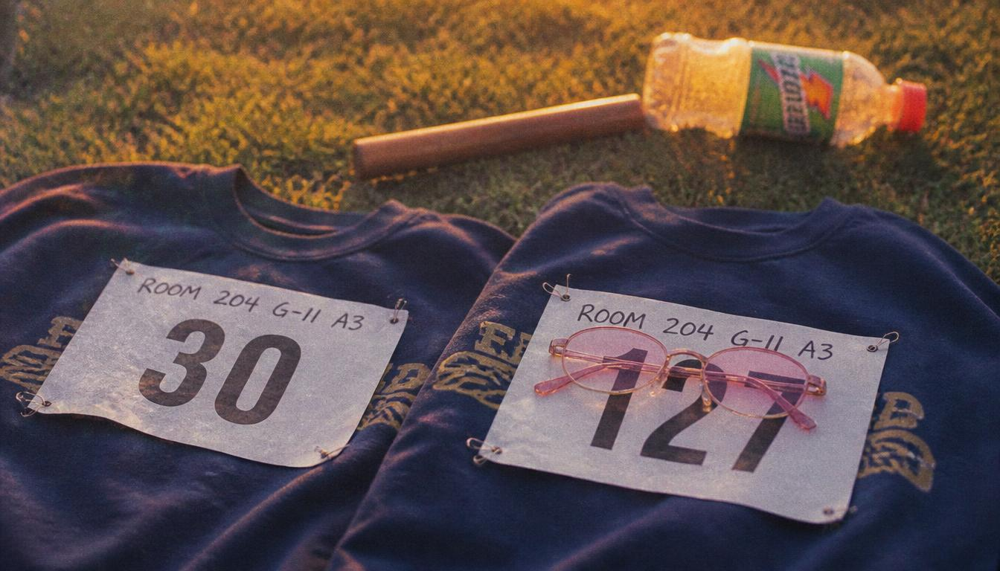
Today feels like I’ve stepped straight into heaven while still alive. I don't even know how to begin describing this feeling. I've never been this happy in my entire life. It's the feeling of getting a reply from the girl I've been secretly loving... My heart was pounding like someone anxiously waiting for exam results. Now that everything turned out just the way I wished, my happiness knows no bounds.
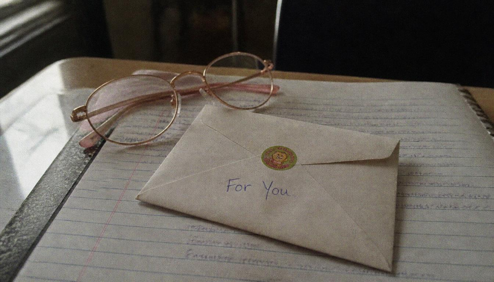
Today on the way down the stairs, your hand reached out to me. A pair of eyes filled completely with worry and warmth. To be honest, we were simply walking out of the classroom to take our exam. But for me, taking the same test alongside you... I felt like I had already won before taking it.
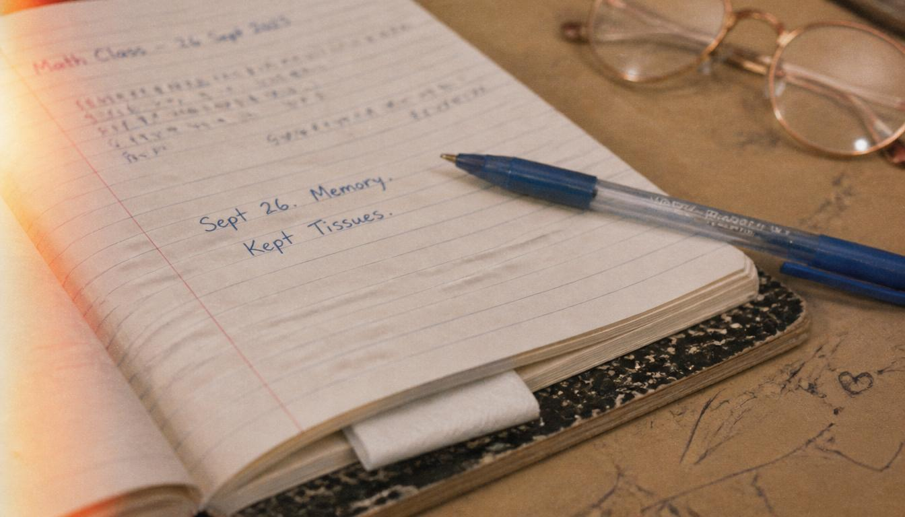
How could I ever forget this day? It was the day the two of us came back after taking our sports exam. Even during the test, I was so happy just because you were there. When we got back to the room, there was even more happiness waiting for us. Truth is, all this joy only exists simply because you are by my side.
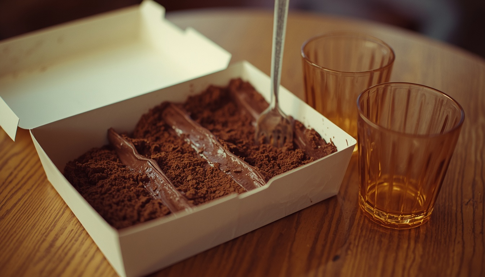
Today was something I honestly never expected. Ever since the start of the year, all I longed for was the chance to sit by your side. Yet today, you came over and sat next to me again. As luck would have it once more, we happened to be the only two wearing matching white on a yellow day. Even if it was purely coincidental, it was such a wonderful twist of fate.
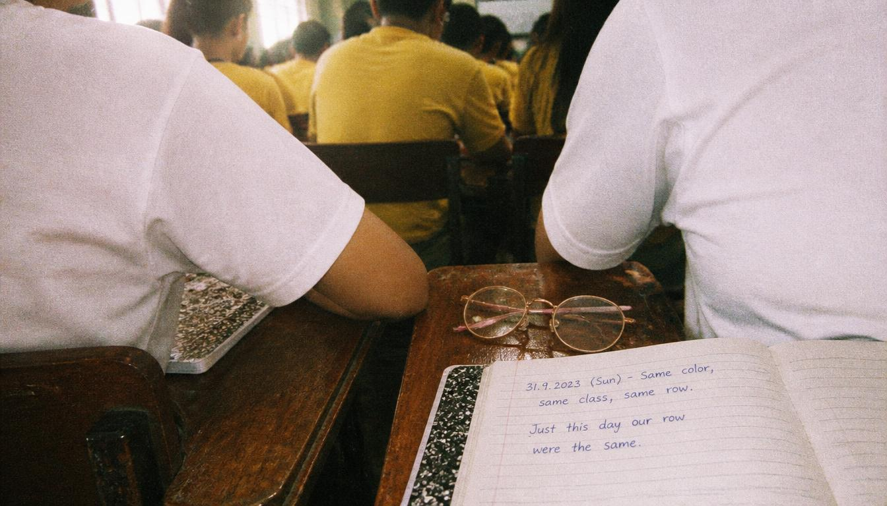
It’s been nearly a month of sending letters to each other. Countless conversations woven into pages. I have no idea how many handwritten letters lie ahead of us. No matter how many, writing them brings me pure happiness, and I’ll write every chance I get. Out of all the things I hold dear, your notes mean the absolute most to me. Each word you say holds the key to whether my day is filled with happiness or sadness.
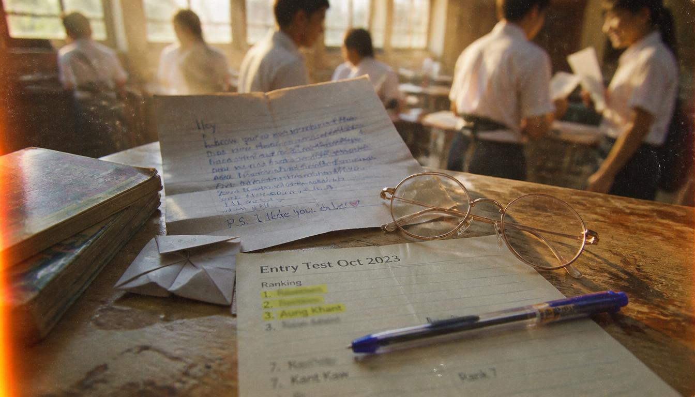
If only I had the chance to speak to you today... If only I had the opportunity, I would undoubtedly wish you a Happy Birthday. Even though I didn't get to say it to you face-to-face, From the very moment I opened my eyes this morning, I made more good deeds than any other day, praying for blessings to reach you. May you have a wonderful birthday, my beloved Kant-Kaw. May peace and happiness follow you with every single breath you take.
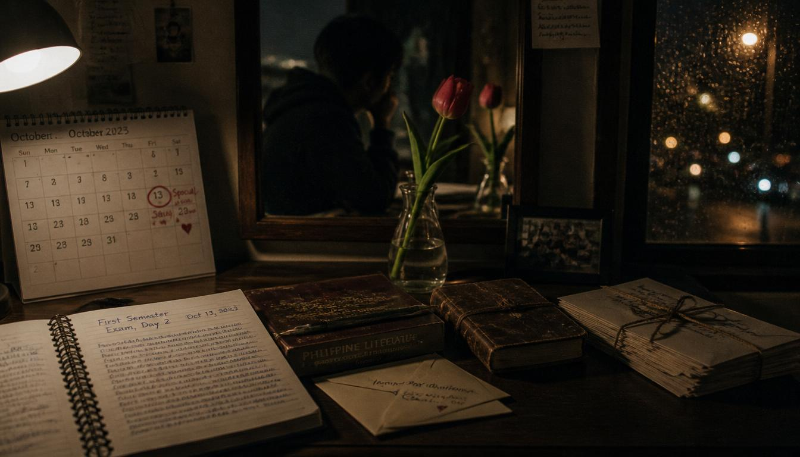
There was such a storm inside my chest tonight. I stayed awake the entire night. But losing sleep was entirely worth it. From the moment I was allowed into your life, Losing you scared me far more than death itself. It was that exact fear that pushed me to lay all my feelings out.
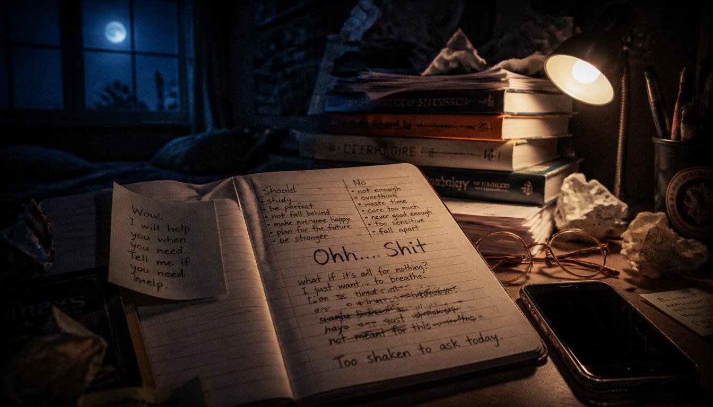
Starting today, I finally get to call you mine. Though in truth, from this day on, my heart and soul belong entirely to you. I will never forget this day—not for eternity. Thank you for allowing me to hold your heart. I may not be perfect, but... I will always do my very best for you.
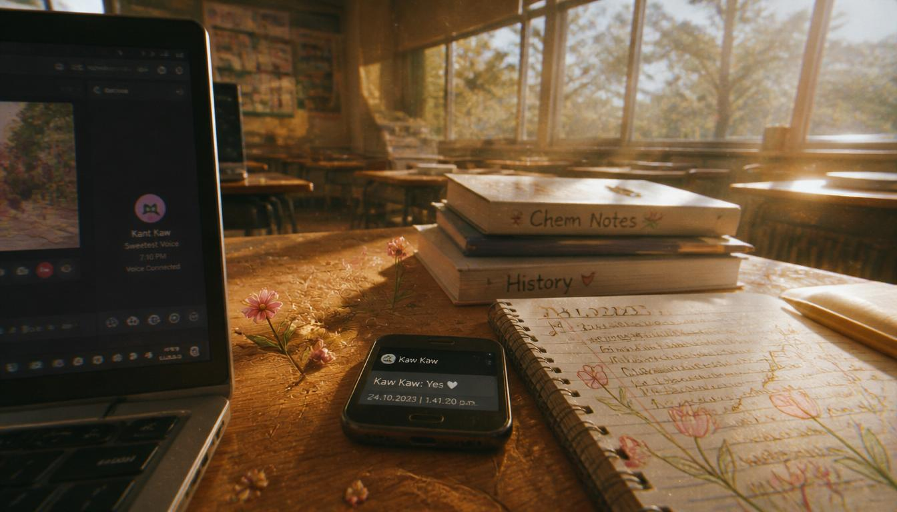
I was blessed to call you mine. Actually, it goes far deeper than just possessing your love. Today, instead of saying you belong to me, allow me to say that I belong entirely to you. The very first audio message I've ever received from you in my life... It was merely 9 seconds, but for me, not even 9 years could make me forget it.
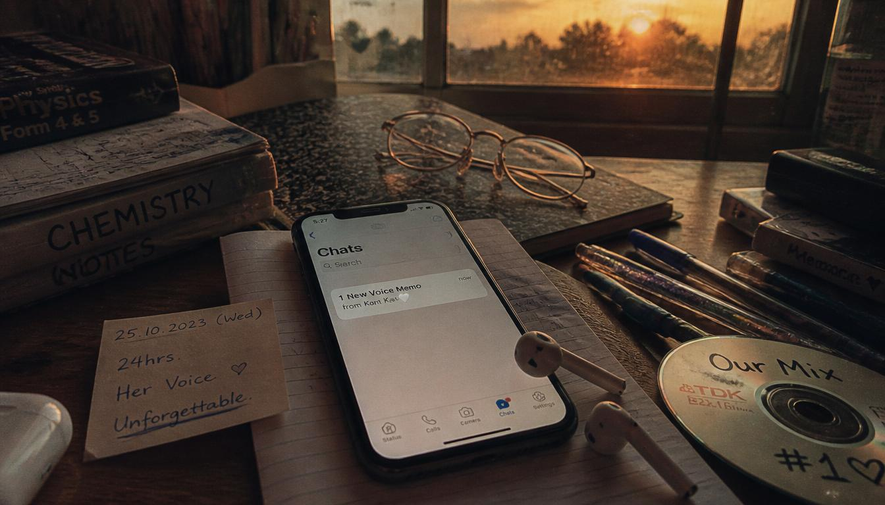
We are reunited at last. Though we were apart for merely ten days, to me, it felt like ten whole lifetimes. I get to gaze upon this face and this precious smile once again. Seeing you back as my love... If I could, I would run over and hold you tight, never letting go. After all, who would ever want to let go of what they treasure most? Oh, my dearest Kant-Kaw, forever blooming with smiles...
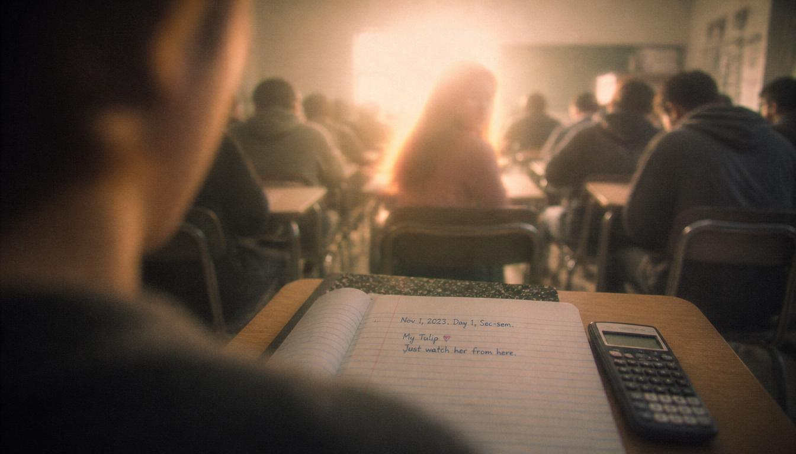
Receiving your note today... Made me wish I could just disappear from this world. Why did I have to say such harsh words? Hurting your feelings was my biggest fear, but... I ended up hurting you unintentionally. I humbly beg for your forgiveness. I hope your anger fades quickly so we can go back to being happy like we used to.
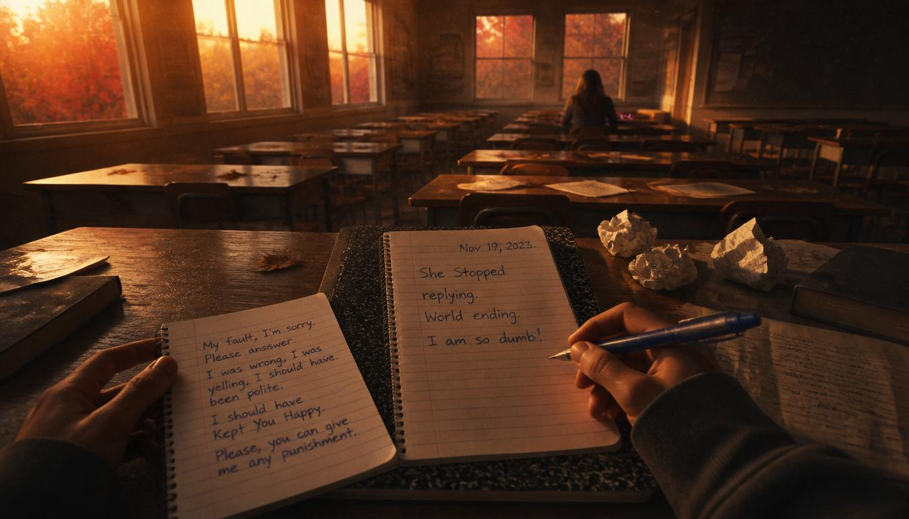
After three days, today... Your anger toward me has finally faded. Only now can I eat and sleep in peace. Rest assured, as long as you aren't happy, I have no joy either. Please never think that I'm happy when you're feeling down. Tomorrow, we hit our one-month mark. I hope to walk through all the coming months and years together with you.
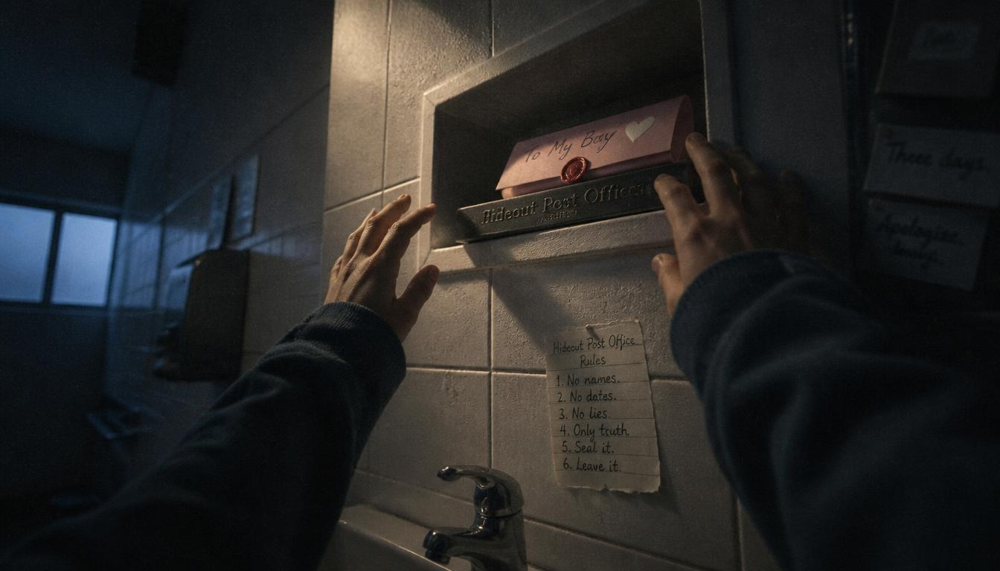
Today, it's officially been a month of us as lovers. Thank you for standing by me as a friend, and now, for sharing this journey with me as my partner. I love you—I loved you from the very first time I saw you. I love you today, and I’ll continue to love you for all the days to come. Just thinking about you makes my world such a lovely place. Let’s walk hand in hand all the way to the end, shall we? 🤍
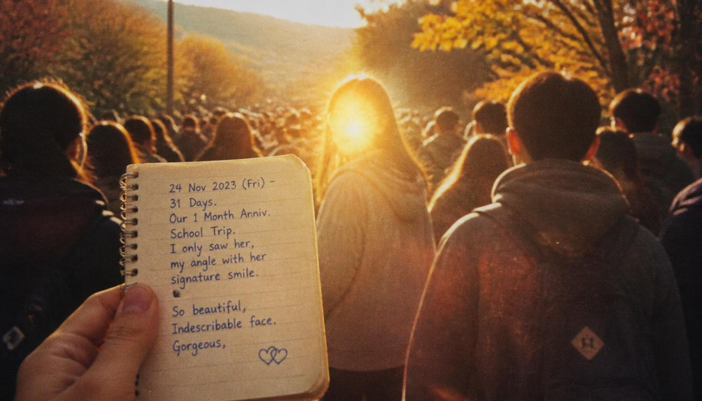
ငI wonder what mistake I could have made today... I kept questioning myself this evening. I don't even know the reason why. All I know was: inside, my heart feels barely alive. Why did you look at me like I was a complete stranger, my love?"
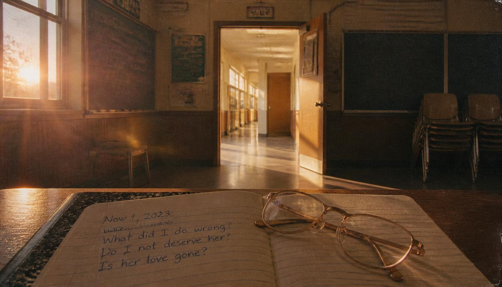
Today, just a day before the school bazaar... I received two notes. Within them were words that revived my whole world. The chaos inside my mind has finally settled. Whether those words came truly from your heart, Or were just a quick explanation to settle things, I honestly don't know. And I don't even care to know. All that matters is that my world Can breathe and live once more, thanks to you...
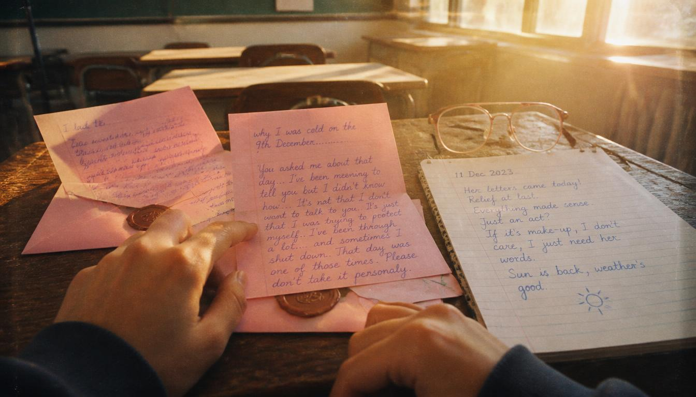
Today was still a wonderful memory in its own way. Aside from us not getting the chance to talk, and you being unable to speak to me... I couldn't do much more than watch you eat the treats you love. At the very least, I take pride in the fact that I made you smile. I'm happy with that... after all, we have all the time in the future to talk. Though today didn't offer us the chance, one day, it definitely will.
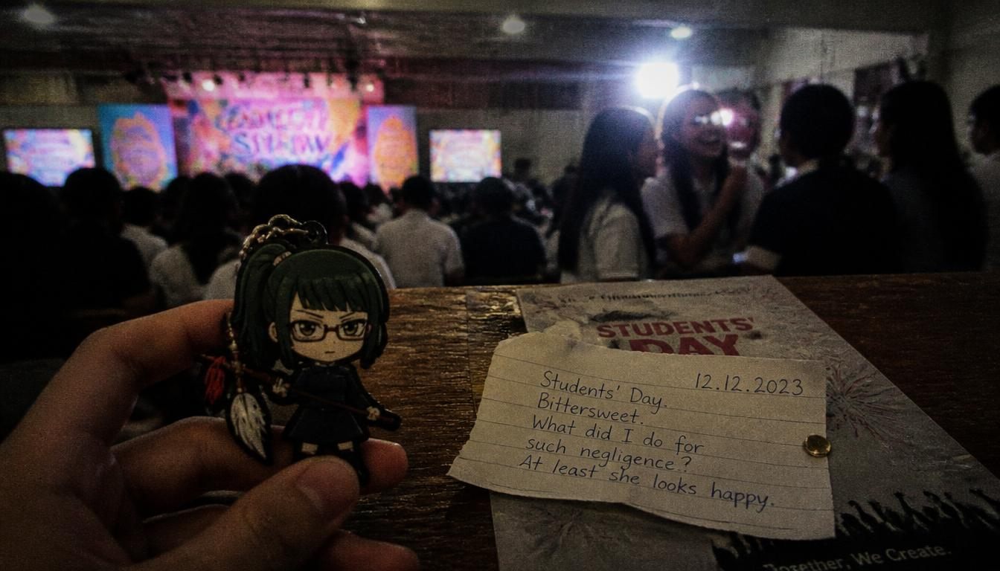
Today was another precious memory in this story. The day you addressed me as 'Maung' for the first time. Even though it was Demcember holidays where we both got lectured by our parents... The second I read your note, a wave of warmth flooded my heart. I'm satisfied... How sweet it would be if we could continue to talk like this from now on. It's because of moments like this that I can't help but smile whenever you cross my mind.
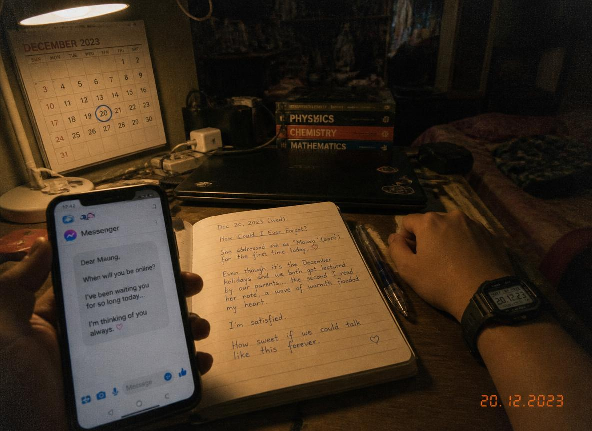
A new year has begun, and school has reopened. Once again, I’m blessed to witness your laughter and smiles, which I could never tire of. It has been 17 weeks, or 119 days, since we started quietly passing messages back and forth. Endless words, endless conversations... May our story keep flowing forever, my beloved.
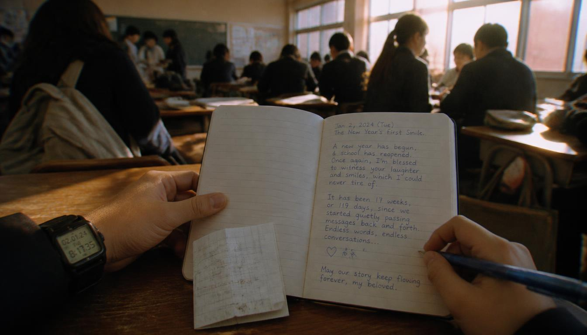
Yesterday, I gathered up the courage to ask you for it. Just as you always say, I assumed you'd hesitate, afraid others might find out. But this morning, there it was, hidden inside my notebook—a hair tie, Such a lovely, sweet shade of brown. This little token will stay in my hands for eternity. Or maybe it will live forever inside my heart, as a precious keepsake of you...
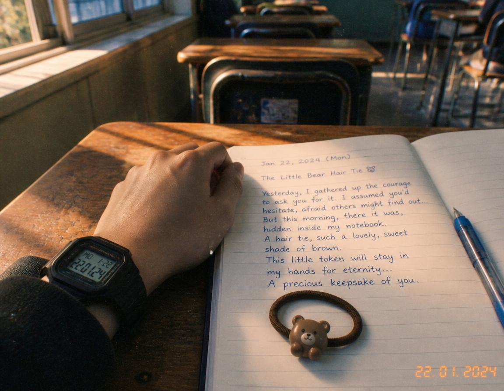
Today at 3:30 PM...
I could hardly believe my eyes.
My sweet Gangaw, standing there in the dimly lit room.
Just like you always do, whenever people start getting suspicious,
You avoid looking my way and simply act to erase every trace.
I felt a wave of sadness inside...
Not because of anything you did,
But because I couldn't carry myself in a way that makes you feel truly safe.
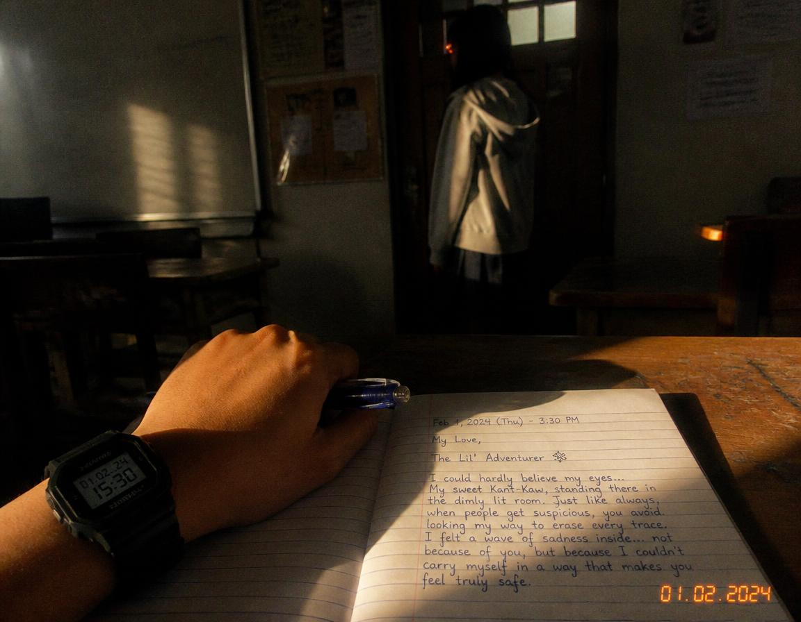
In just two days, the farewell event will be here. Is it true what they say—that you're transferring schools? So it means I really have to say goodbye to you... I'm truly not ready for this, my love. Regardless, today you signed in our group photograph. In two days' time, leave an even deeper sign right on my heart. No matter how I try to comfort myself, nothing eases the pain. Please don't let this farewell be our very last goodbye...
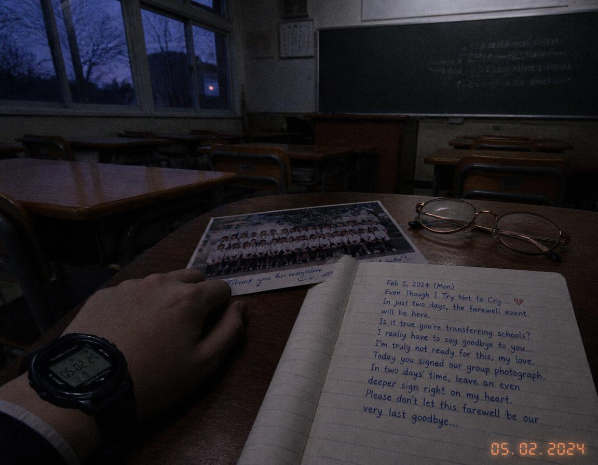
Earlier this year, I wished this day would hurry up and come. Thinking it would just be a cheerful, temporary break with friends, Counting down to seeing everyone again next term... Now, all that excitement has completely faded. I used to welcome every single day with a smile just because I'd see you, But today, I am facing it through tears, my love. Please take care of your health at your new school. Try as I might to stop them, I can no longer hold back my tears today. It was indeed a beautiful encounter, just like you said, but... Allow me not to say goodbye, for this cannot be our ending. Forgive me for not bidding you a proper farewell.
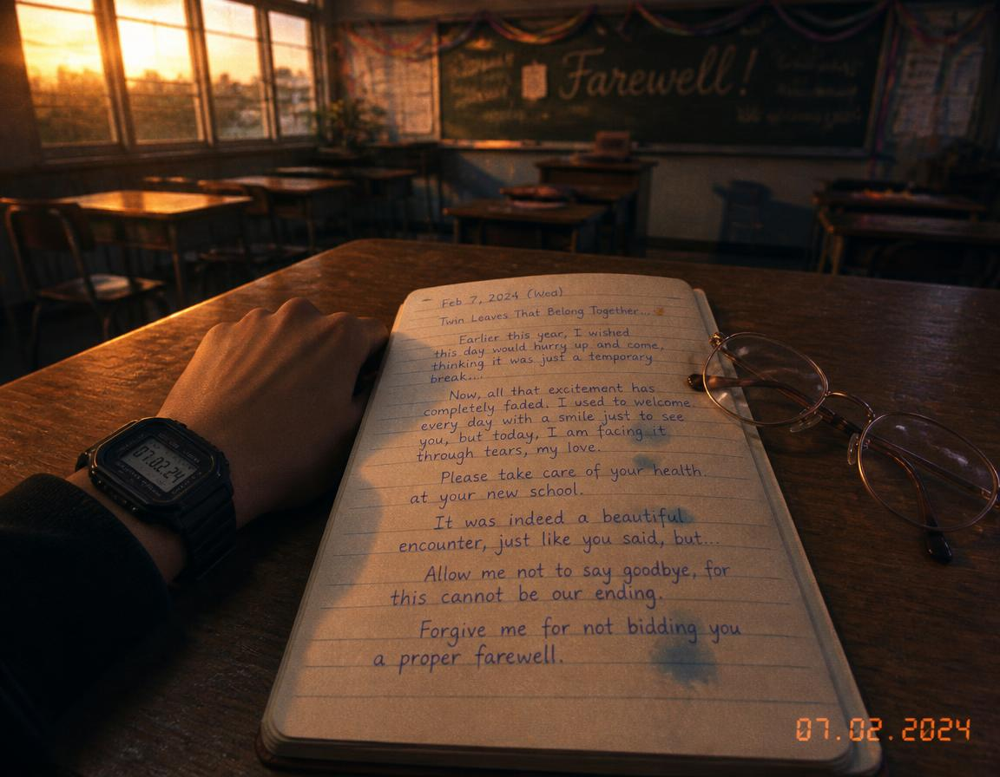
I woke up earlier than usual today. I wasn't happy, nor did I feel alive like on ordinary days. As soon as I opened my eyes, the first things to greet me were four messages you left at 5:30 AM: 'I must leave now.' 'Please take care of your health.' 'Try to get along well with everyone.' 'Focus on your studies, alright?' How am I supposed to soothe my heart with any reasoning, my love? How can I look at all this and pretend I won't cry
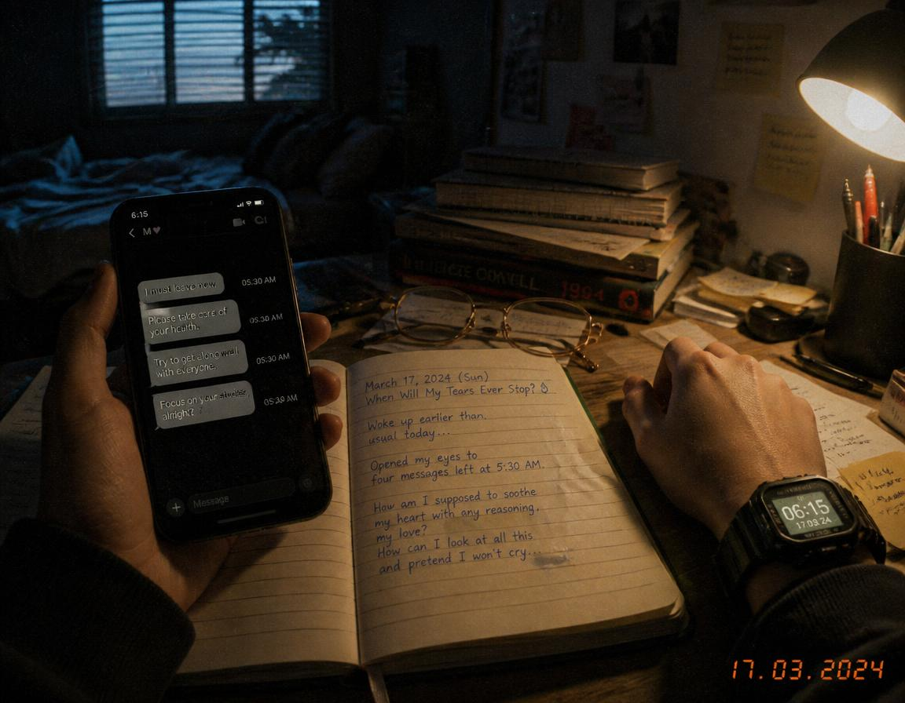
You returned today for the summer holiday. Memory holds it clear—it was right around 5 to 6 PM that evening. 'Hey, what are you up to?' you said. I was so thrilled I might have actually jumped for joy. Oh, we stayed up chatting through the entire night. It was Thingyan season then, and if I had to name the happiest Thingyan in my whole life, I would answer that it was that exact year. What lay ahead in the coming months... I didn't know. I couldn't have known. I had no idea that our golden days were reaching their final end. I didn't know that the joy blooming in my heart during that Thingyan was to be my last smile...
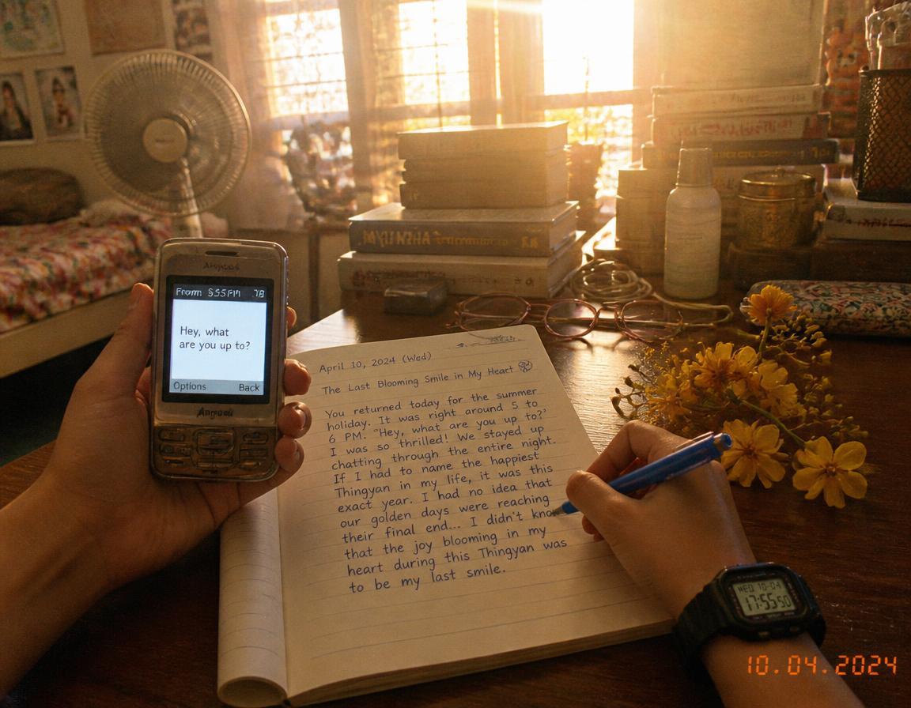
Everything is over now. I prayed that I would never have to write about a day like this, yet here I am, writing through a blur of tears. All this time, I tried my best to hold on until the very end, but today... please forgive me. I no longer have the strength to endure, nor can I bear to watch you be so unhappy. So at the end of this story, let me just be the villain. You are completely blameless; even if you weren't, I could never bring myself to fault you. If I had tried to work through things together like we used to, instead of running away and ending it today, perhaps we would still be together right now. Thank you so deeply for giving me the chance to weave memories so beautiful they can never be remade. Forgive me, my love, for being reckless and acting like a stubborn child who just wanted to win, rather than keeping a calm mind as you always told me to. Even if you can't forgive me in this life, should we meet again in some corner of eternity, please forgive me then... One day, at some time, in some lifetime—even if you can never love me again, I pray you won't hold onto anger against me, my love. Thank you with all my heart for sharing 358 whole days with me. Tragically, our story ends today...
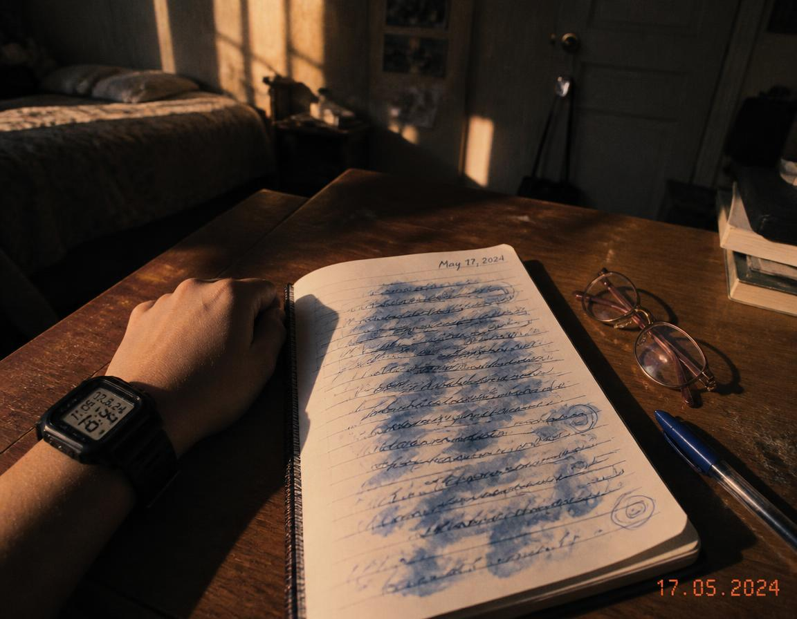